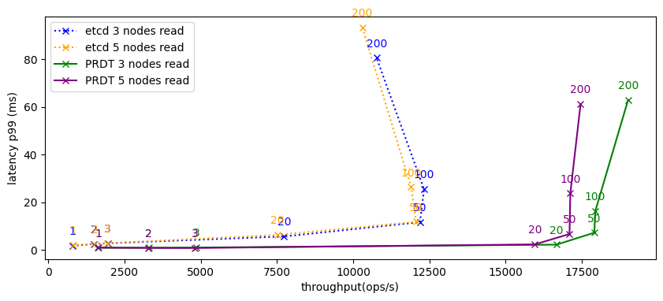
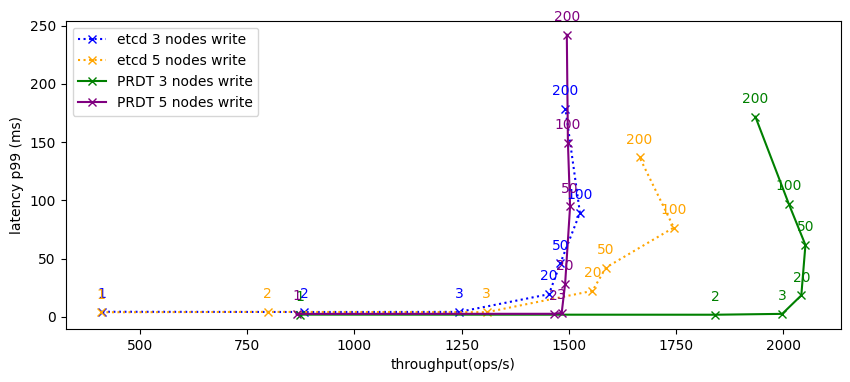
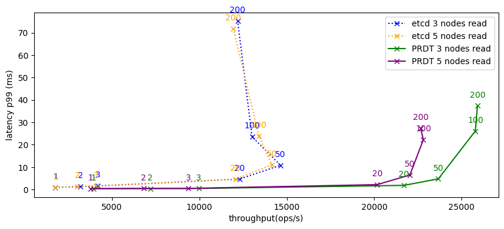
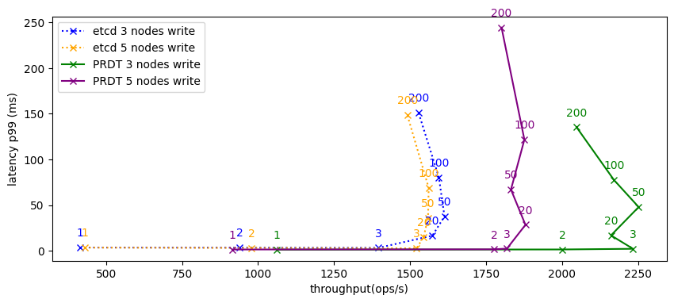

This is the artifact for the paper “PRDTs: Composable Design and Verification of Consensus Protocols using Replicated Data Types”.
It contains the following components:
Our performance benchmarks are supposed to be run on cloud infrastructure. They require at least 4 Ubuntu machines (3 for the cluster, 1 for the benchmark runner) that you have SSH access to. For the artifact evaluation period of OOPSLA26, we give the reviewers access to remote servers that can be used to run our evaluation scripts. However, if you are reading this after artifact evaluation has ended, you will have to bring your own servers for the remote benchmarks (see the section “Additional Artifact Description” for details).
For orchestrating the benchmarks and executing the other parts of the artifact, we provide two docker images, one for linux/amd64 and one for linux/arm64. The former should work on any 64 bit x86 system while the latter should work on 64 bit arm machines such as those based on Apple silicon chips.
Download the artifact from https://doi.org/10.5281/zenodo.21442650. There you will find two docker images for easy execution and a zip file containing all the sources (code and scripts) used to build the docker images. The latter can be used to change and reuse the artifact, and to run it without docker.
Make sure that docker is installed on your machine (podman might work as well). Then, pick the right docker image for your architecture and load it using:
docker image load -i dockerimage_amd64.tar # for x86docker image load -i dockerimage_arm64.tar # for ARMVisualizing the Benchmark Results:
After loading the image, copy the
/datasets/paper_dataset folder from the zip file that came
with the artifact. It contains the benchmark results that were used to
produce the figures in the paper.
Then, start the docker container from the folder containing the
paper_dataset folder:
docker run --rm -it -v ./paper_dataset:/app/results -p 8888:8888 prdt-artifactThis should open an interactive shell from which you can run various scripts.
Try running the following command to start a jupyter notebook to analyze the pre-supplied benchmark results.
scripts/run-jupyter.fishThis should print a URL like
http://127.0.0.1:8888/tree?token=... to your terminal. Copy
this URL and paste it into a webbrowser. Inside the jupyter menu, select
the “Data_Visualization.ipynb” notebook and run it via “Kernel >
Restart Kernel and Run All Cells”. This should produce several tables
and plots.
Running Cloud Benchmarks:
Next, we are going to perform a benchmark run on our supplied cloud-infrastructure.
Disclaimer: These scripts should only be run by one reviewer at a time since they run on the same infrastructure and running multiple benchmarks at once will affect the results.
Go back to the terminal running the jupyter notebook and stop it with Ctrl-C. Then, stop the running docker container (e.g. via Ctrl-D).
Create a folder to hold your benchmark results,
e.g. my_dataset. Then mount it into the docker container
using
docker run --rm -it -v ./my_dataset:/app/results -p 8888:8888 prdt-artifactTry to run a benchmark on our supplied cloud-infrastructure:
scripts/test-benchmark-cloud.fishThis should run two simple benchmarks which takes around 7 minutes.
There might be ansible deprecation warnings but the script should still
run and in the end the results should show up in your
myresults folder. After the benchmark has finished, you can
start up the jupyter notebook again with the
scripts/run-jupyter.fish command to inspect the results.
The notebook will fail to evaluate the later half of the cells because
it is missing input data for the leader failure and geo-replicated
benchmark. This is expected and okay for now.
If you run into problems, see the Troubleshooting section at the end of the document.
The main evaluation workflow when interacting with the artifact consists of two steps:
scripts folderLoading a dataset:
To load a dataset, mount it into the docker container. For example,
to load the paper_dataset, run:
docker run --rm -it -v ./paper_dataset:/app/results -p 8888:8888 prdt-artifactAnalyzing a dataset:
To analyze a dataset, run our jupyter notebook with:
scripts/run-jupyter.fishIn the command output, look for a line containing an URL like
http://127.0.0.1:8888/tree?token=..., copy the URL and open
it with a browser. In jupyter, select and open one of the three
notebooks corresponding to the benchmark you want to analyze. You can
run the notebook via “Kernel > Restart Kernel and Run All Cells”.
This will produce the figures from the Evaluation section of the paper.
The notebooks also allows you to inspect the data interactively and
create new analyses.
By default, each notebook considers the 3 newest runs per configuration (same workload, same number of servers, same system).
Populating a dataset:
In order to create a new dataset my_dataset, restart the
container (Ctrl-C, Ctrl-D):
mkdir my_dataset
docker run --rm -it -v ./my_dataset:/app/results -p 8888:8888 prdt-artifactYou can then use the scripts in the scripts folder to
populate the dataset.
Disclaimer: the cloud scripts should only be executed one at a time (by one reviewer at a time) because they will run on the same infrastructure, which will affect the results.
You can produce a complete dataset (read/write benchmarks, leader
failure, geo-replication, 3 runs per config) with the following command.
Beware: The script takes about 17h to finish. You can
control the RUNS variable to do less runs per config.
RUNS=3 scripts/all-benchmarks.fishFor a slightly quicker option, you can run individual benchmark scripts:
RUNS=3 scripts/datacententer-benchmarks.fish # ~10h
RUNS=3 scripts/geo-repl-benchmarks.fish # ~5h
RUNS=3 scripts/leader-failure-benchmark.fish # ~90minFor the quickest option, you can run a single cloud benchmark using:
NUM_NODES=3 THREADS=10 WORKLOAD=writeonly scripts/run-benchmark-cloud.fishThis will provision the needed cloud servers, run the benchmark for
both systems, retrieve the results into the dataset, and remove the
servers again. NUM_NODES controls the amount of physical
machines that will be part of the cluster, while THREADS
controls how many client threads will be stressing the system
concurrently. WORKLOAD sets the YCSB workload that is going
to be executed. We support workloadb (read-mostly workload)
and writeonly (only writes). Each benchmark run
takes ~7 minutes including setup and teardown.
Interpreting the results:
Your results will likely differ from the ones that we reported in the paper. In particular, there will always be a certain randomness factor when relying on cloud infrastructure. Any consensus-based key-value store is highly latency sensitive and we cannot control the exact location of the node machines. They will be located in the same data center but their exact location in the data center and the general network load of the data center will affect performance results. To ensure a fair comparison, our scripts always run the benchmark for both systems (etcd and ours) on the same servers befor tearing them down again.
To make things worse, our cloud provider hetzner seems to be experiencing a high load on their cloud instances right now (source), which can affect latencies. However, this affects both systems equally, and thus the general trends and observations that we describe in the paper still stand: With all nodes in the same data center, both systems perform comparably for writes, and our system outperforms etcd for reads.
See the reproducibility guidelines for further discussion.
The main reusable component of our artifact is the PRDT library (written in Scala) that allows users to implement new protocols through composition (see Section 4 of the paper for a tour). We develop the library in the context of the Bismuth project and our PRDT components are included in its RDT library. Development happens on Github and we publish Maven artifacts that allow developers to easily include the library into their Scala projects. The code is licensed under Apache License 2.0 license.
We also include the library as part of this artifact in the
src folder. The version included in this artifact is also
available under the
https://github.com/stg-tud/Bismuth/tree/prdt-oopsla26-artifact
branch.
See
src/Bismuth/Modules/RDTs/src/main/scala/rdts/protocols for
everything PRDT related. This includes a slightly extended version of
the Paxos implementation from the paper, the
MultiPaxos implementation that we use in our benchmarks,
and other components such as Voting that we introduce in
Section 2 of the paper.
You can find the Paxos variants from Section 4.2 - 4.4 in the folder
rdts/protocols/paxosVariants.
Our key-value store implementation as well as the YCSB adapters used
for our performance evaluation can be inspected in the
src/Bismuth/Modules/Protocol Benchmarks module.
Section 4.2 of the paper already sketches how one could start
designing custom PRDTs for various scenarios. In order to allow further
experimentation with the library, we include an example Scala project in
src/example-project.
This project demonstrates how to use the PRDT library as a dependency in order to implement custom protocols. It implements an optimized version of the MultiPaxos presented in the paper (Section 4.3).
Load the project in sbt (a Scala build tool) using:
docker run --rm -it -v ./src/example-project:/app --entrypoint sbt prdt-artifactVerify that the project compiles by entering compile
into the sbt shell.
Next, open the file
example-project/src/main/scala/ParallelMultiPaxos.scala in
your favourite text editor.
The idea behind ParallelMultiPaxos is to allow multiple
Paxos instances to be run in parallel using one instance for each log
entry. This is reflected by the case class definition:
case class ParallelMultiPaxos[A](
log: Map[Long, Paxos[A]] = Map.empty[Long, Paxos[A]],
commitIndex: Long = -1
)The log is a map from log index to Paxos instance. In addition, we keep a commit index that tracks which Paxos instances have come to a decision. An index of 2 would mean that instances 0-2 are decided already.
Given this case class definition, our library can derive a merge function semi-automatically. Look for the following code at the bottom of the file:
given [A]: Lattice[ParallelMultiPaxos[A]] =
given Lattice[Long] = Math.max
Lattice.derivedWe only need to define how to merge Longs (for the commit index) and
the rest can be derived automatically because the library already knows
how to merge Maps of Paxos instances.
Next, look at the read function of
ParallelMultiPaxos:
def read(using Participants): List[A] =
// return values in log order but only if all previous rounds are decided
NumericRange(0L, log.size.toLong, 1L).view
.flatMap(log.get)
.filter(_.result.isDefined) // TODO: THIS IS A BUG!
// FIX: return log until first undecided round
//.takeWhile(_.result.isDefined)
.map(_.result.get)
.toListread simply checks which Paxos instances already have a
result (have come to a decision), and returns their values sorted by log
index. However, the current implementation contains a bug: It simply
ignores undecided log entries and might return a decision for slot 2
before there is a decision for slot 1. This violates
action monotonicity (Definition 3.7) because we could go
from Log(2) to Log(1,2) which violates the
standard decision order for log-based consensus which is that we can
only append to the log!
Our PRDT library makes it easy to catch these kinds of bugs in a
Scala project and generate counter-examples through property-based
testing. The file
example-project/src/test/scala/PropertyBasedParallelMultipaxos.scala
demonstrates how to implement a simple property-based test suite. The
test suite simulates a number of ParallelMultipaxos
instances, executes a series random protocol actions for each instance
and merges the instances from time to time to simulate network
communication.
Run the test by entering test into the sbt shell. This
should fail and print some relatively verbose output. Scroll up to find
the failing property. The output should print one of the following
properties (the exact values might differ):
every log is a prefix of another log or vice versa, but we had:
left: List(-1102037233, -1)
right: List(-1)local logs grow monotonically, but went from
List() to List()
and
List(1798591263) to List(1770191727, 1798591263)In order to fix the bug, go back to
ParallelMultiPaxos.scala and replace the
.filter line by the takeWhile line as
indicated by the comments. This changes our read logic such that we
return the results of the individual Paxos instances in order and do not
skip over undecided entries. Your new version should look like this:
def read(using Participants): List[A] =
// return values in log order but only if all previous rounds are decided
NumericRange(0L, log.size.toLong, 1L).view
.flatMap(log.get)
//.filter(_.result.isDefined) // TODO: THIS IS A BUG!
// FIX: return log until first undecided round
.takeWhile(_.result.isDefined)
.map(_.result.get)
.toListRerun the test by entering test in the sbt shell. The
output should report all tests as succeeded.
Our evaluation makes one central claim:
This claim can be evaluated by running the
all-benchmarks.fish script and comparing the results for
our PRDT-based system to etcd as described in the evaluation
intructions. While the exact performance numbers are dependent on the
performance of the cloud environment, this should affect both systems
and should not violate our main claim of comparable performance.
See the following figures for a comparison between the performance measurements that we conducted at paper submission time (first) and during artifact preparation (second).
Paper Results:


Artifact Preparation Results (changes are due to varying network latency, but still show the same trends):


This section describes additional parts of the artifact that were not discussed in the previous sections which might be interesting for the curious reader beyond artifact evaluation. At the end of the section we also provide some troubleshooting guidance if anything goes wrong while following the evaluation instructions.
/ansible:Contains various ansible playbooks that we use to setup the servers,
install the necessary software and orchestrate the different benchmark
scripts. Refer to the scripts in /scripts to see how they
are called. We believe they are fairly reusable and could potentially
serve as a foundation for benchmarking other systems with YCSB.
If you want to run the scripts without our supplied infrastructure,
you need at least 4 Ubuntu machines (1 for the benchmark runner, 3 for
the nodes) that you have ssh access to. Then, prepare an ansible
inventory for your machines. You need to define the groups
nodes and clients:
# myinventory.yaml
nodes:
hosts:
one.example.com:
two.example.com:
three.example.com:
clients:
hosts:Afterwards, use your inventory like this:
ansible-playbook -i myinventory.yaml ansible/setup-servers.yaml/src/stainless:This includes the stainless proofs for the Voting and
Paxos data types presented in the paper.
Consensus.scala demonstrates how we encode the consensus
trait from Figure 6 of the paper. Both Voting and
Paxos contain instantiations of this trait which serve as a
proof of the PRDT safety properties derived in Section 3.3 of the
paper.
We used stainless vesion 0.9.9.1 which we include in the
/bin folder. You can try to verify our stainless
implementations by running the following from the folder with the
stainless binary fitting your system:
./stainless --solvers=smt-z3,smt-cvc5 --timeout=600 ../../src/stainless/src/main/scala/*.scala/scripts/localThe scripts in this folder demonstrate how to run a local cluster of our key-value store or etcd respectively. They could be used as a basis for running local experiments. However, one should note that it is generally not a good idea to have the benchmark driver and the system being stress-tested on the same machine because this will slow down the benchmark as well.
Q: The ansible script is taking longer than expected/seems to hang/is throwing error messages.
A: Some of the scripts can be a bit flaky/unpredictable. Try stopping the script via Ctrl-C. Then, reset the servers by running.
scripts/remove-all-servers.fishThis removes all cloud servers such that the next script can start in a clean state.
Q: I don’t want to wait 17h for the benchmark results.
A: You have several options:
datasets/paper_dataset using the analysis scripts.RUNS variable and only run individual
scripts, e.g. RUNS=1 scripts/geo-repl-benchmarks.fish. This
is more prone to outliers in the dataset because every configuration is
only tested once, but it is more convenient for quick
experimentation.